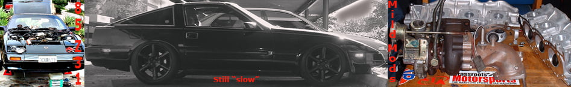

-
Jason what plugs are you using? with your current setup? -
Regular NGK, 1 heat range colder: BCPR7ES-11 gapped at .028 on stock ignition.
I think they are stock number 3330 if I recall correctly, most parts stores will have to special order them.
I was thinking about going to 8's the next time I swap them out… just to see if it changes at all. -
what's the diff between the BCPR7ES-11 and BCPR7E-11? the "s" is absent from FSM plug #s for the VG30ET -
I don't think you can get the BCPR6E-11's anymore that are spec'd for turbo cars, but I've always run the ES-11's anyway. -
Good info thanks! I'll add it to my collection
-
FYI: It's also linked in the new turbo faq on my website. -
just to add to the spark plug thread,
when running at the track, cool day, 374-ish hp, i was breaking up real bad at the top of fourth, had to shift into fifth before the clocks. i was running the 7`s. gapped at around .030. i gapped them down to .025 and the problem went away. now, with the 9:1 engine, it didn`t like the .025 gap, i think it added to a crappy idle, so back to .030 and i didn`t have problems with that gap at the track.
moral of this story? fuck if i know…
Exercising my constitutional right to be awesome
good thing....1.5.2. Podium winning cars do NOT need to be running at the checkered flag -
Don't know the moral either, however, it did make me chuckle.
I need to renew my smog so I am gonna cover my adjustable gears I gapped the BCPR6ES-11 @30. I put the BCPR7ES-11 on order and will try them out when I hook up my intercooler piping I'm not in the mood to try to pass smog with that hooked up.
We have Smognazis here :roll: -
I had problems running over .28 or so with 18 pounds of boost. Was blowing spark out at high rpms. Sounded nasty.BLOZ UP.com
It is not recommended to confirm proper installation by driving into walls or other barriers as this could cause personal injury or damage to the vehicle. -
We have smog nazi's as well. But i sold a guys car for him and waves visual inspection now.
No one is running iridiums? I just got my NGK wires and iridium plugs. I am waiting until i put new plennum on. (which may be during turbo conversion) :?
Terrible idea putting those wheels on… -
Iridiums?
No, actually standard copper plugs have been shown a few times to yield the best performance on the VG. I have always had great results with them. I think this has something to do with the semi-pentroof/hemi combustion chamber shape and the way the airstream enters the chamber in a forced induction application. For the money you spend on iridiums you could have two sets of regular plugs and a set of race plugs anyway… -
yeah, copper is great, but durability is a bit lacking.Jason84NA2T wrote: Iridiums?
No, actually standard copper plugs have been shown a few times to yield the best performance on the VG. I have always had great results with them. I think this has something to do with the semi-pentroof/hemi combustion chamber shape and the way the airstream enters the chamber in a forced induction application. For the money you spend on iridiums you could have two sets of regular plugs and a set of race plugs anyway…
iridium I think is a good compromise if you don't want to change plugs all the time -
I've been running the same copper plugs all year so far. They were used from one of my old engines, I regapped them and installed when I put the new engine in this spring. They probably have 10K+ of hard driving on them, which is over a year for most people. So far my copper plugs have been outlasting my engines. I've heard a few reports of people using iridiums on higher HP turbo cars and having spark issues, then switching back to copper and the issues go away. This might actually just be a gapping or ignition system issue, but it could also be because of the smaller flashpoint.Andrevas wrote: yeah, copper is great, but durability is a bit lacking.
iridium I think is a good compromise if you don't want to change plugs all the time -
i have ngk iridiums , i dont think there is much difference (well im not sure because when i put them on i also changed out alot of things..) , but i regapped them (yea im a tard) becausei had a problem at idle , i broke one of the electrodes so i have one copper spark plug in there with five iridium which reminds me i need to go order another one.
i think they just give me peace of mind , my dad put iridiums in most of his cars (just like how he put optima batteries in all too) , its like i get him to fall into these trends …
overall , i think theyre worth the extra buck or whatever , i guess i will have to wait until i put my 400hp capable fuel+turbo system in to see if they really are better or not… -
NGKs are usually a few bucks cheaper than Denso iridium plugs, if you want to spend 11 dollars a plug you can get the Denso's with U groove straps.2+2turbo wrote: i have ngk iridiums , i dont think there is much difference (well im not sure because when i put them on i also changed out alot of things..) , but i regapped them (yea im a tard) becausei had a problem at idle , i broke one of the electrodes so i have one copper spark plug in there with five iridium which reminds me i need to go order another one.
i think they just give me peace of mind , my dad put iridiums in most of his cars (just like how he put optima batteries in all too) , its like i get him to fall into these trends …
overall , i think theyre worth the extra buck or whatever , i guess i will have to wait until i put my 400hp capable fuel+turbo system in to see if they really are better or not…
And if you really do buy a set, I will probably come over and deck you in the face.

Copyright © 2006–. All rights reserved. Privacy Policy